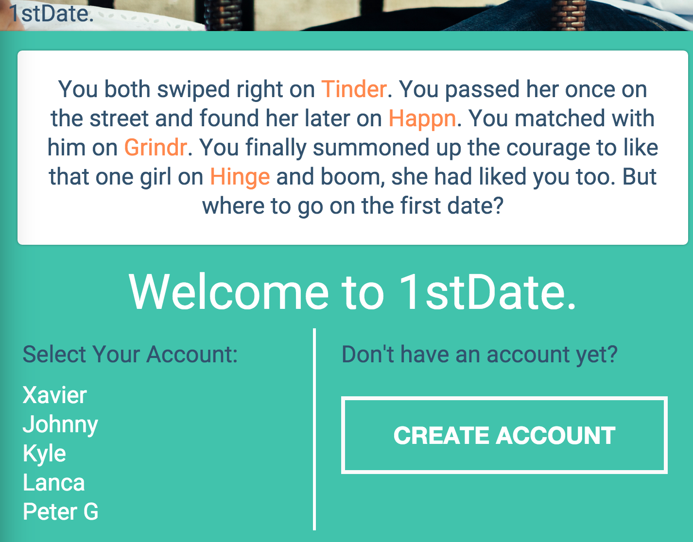
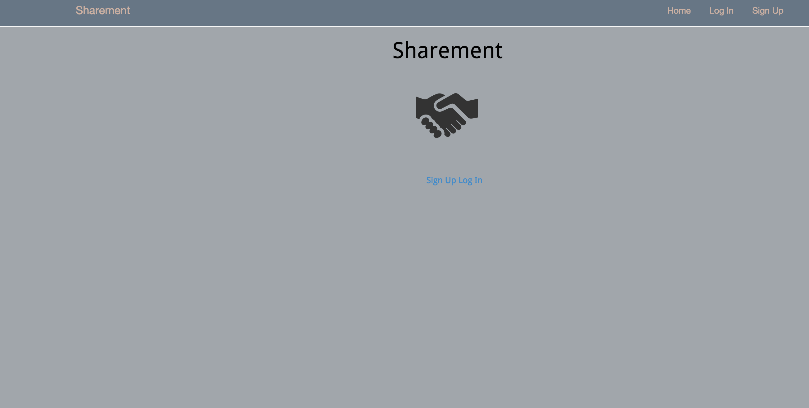

Nya Yeanafehn
I've always been interested in creating something from nothing and presenting that in a way that is visually impactful. With technology, it allows anyone who has a strong belief and willingness to change the world to do exactly that.
As a recent graduate of the Web Development Immersive program at General Assembly, I've learned how to learn new languages and applying it immediately to create presentable web applications. The course has also taught me to be resourceful with the knowledge I have and immediately apply it, even if my knowledge was limited at the time.
Aside from being a junior full-stack web developer, I do video work for non-profit organizations. I think people should know that I make differences in communities through the lens of a camera. I believe that everyone has a strong belief that drives people to contribute in different ways. One of the best ways to showcase your contributions to the world is through visuals.
Skills
My Skillset includes Javascript, Node.js, HTML/CSS, Backbone.js, Ruby, Ruby on Rails, JQuery
Projects
1stDate

1st Date is a single-page web application that algorithmically determines the best spot for you to take your date. You probably don't know that much about him or her; we've thought about that and given you a wide range of descriptors. Once you've told us a little bit about your date, you click a button and we'll take care of the rest by suggesting a restaurant and providing all the relevant details. All you'll need to do is make the reservation. And if you don't like your search, you can search again as many times as it takes for you to love the place (although we're pretty confident we'll get it on the first time!).
Sharement

The app is focused on allowing users to create and save "agreements" to their own account. For example, if Bob and Larry agree on contributing $50 towards buying a new couch, Bob or Larry can record this agreement in Sharement to track it.